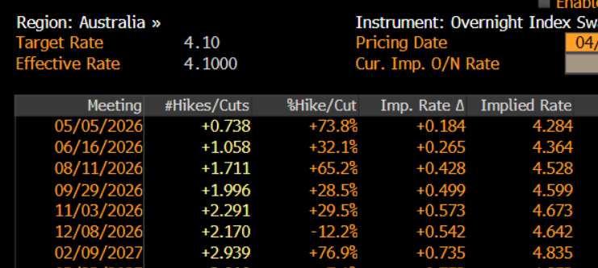

Central banks in focus, but no fireworks expected
In Australia, the key event is the March and Q1 CPI report on Wednesday. Monthly headline inflation for March is expected at 4.8% y/y, with core inflation at 3.3% y/y, reflecting the impact of higher energy prices. Q1 core CPI is expected to rise 0.9% q/q, taking the annualised rate to 3.5%. A stronger outcome, closer to 1% q/q, would likely result in a 25 basis point RBA rate hike in May.

Markets currently imply a 74% probability of a hike on 5 May. Another 25 basis point increase would take the cash rate to 4.35%, effectively reversing all easing implemented post Covid.
The AUD remains in consolidation against the USD and major crosses. There is little evidence of a strong trend, with price action largely range-bound and two-way for now.